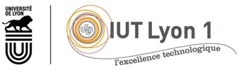
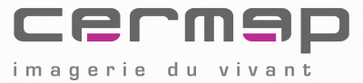
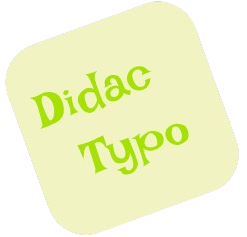

Mon Profil
Bonjour, je suis un étudiant passionné par l'analyse de données. Identifier les besoins d'un client et lui proposer une solution adaptée, voire meilleure, est le type de défi que j'apprécie particulièrement. L'informatique est un domaine en constante évolution. Ce qui est considéré comme la technologie de demain peut rapidement devenir celle d'hier. Et c'est précisément ce mouvement perpétuel qui le rend si fascinant. En informatique, l'ennui n'a pas sa place. L'intelligence artificielle, en particulier, transforme notre monde à grande vitesse. J'ai hâte d'en suivre les évolutions, et si possible, d'y contribuer.
Ma Formation
BUT informatique, IUT Lyon 1 (2° année)
L'IUT est pour moi un endroit où j'apprends de nouvelles choses. Un endroit pour vivre pleinement la vie étudiante. Un endroit pour partager des moments avec mes amis. L'IUT est l'une des meilleures décisions que j'ai prises dans ma vie.
Mon parcours professionnel
Stage Cermep
Ma mission de stage était d'améliorer le site intranet, qui supporte les interfaces de la base de données de gestion et de suivi des activités.
Mes Projets
Didactypo
Le but de ce site web est d'apprendre aux élèves de primaire à taper au clavier avec dix doigts.
CE1.01 | en respectant les besoins décrits par le client et choisir les ressources techniques appropriées
CE1.04 | en veillant à la qualité du code et à sa documentation
CE1.06 | en choisissant les ressources techniques appropriées
CE4.01 | en respectant les réglementations sur le respect de la vie privée et la protection des données personnelles
CE5.04 | en adoptant une démarche proactive, créative et critique
CE5.01 | en communiquant efficacement avec les différents acteurs d'un projet
CE6.02 | en accompagnant la mise en œuvre des évolutions informatiques
CE6.04 | en développant une communication efficace et collaborative
Aérogestion
Ce projet consiste en la gestion de l'espace aérien en France. Il s'agit de déterminer à quelle altitude chaque avion doit voler afin d'éviter toute collision. Cela est réalisé à l'aide d'algorithmes de coloration de graphes.
CE1.01 | en respectant les besoins décrits par le client
CE1.03 | en appliquant les principes algorithmiques
CE1.04 | en veillant à la qualité du code et à sa documentation
CE2.01 | en formalisant et modélisant des situations complexes
CE2.02 | en recensant les algorithmes et les structures de données usuels
CE4.03 | en s'appuyant sur des bases mathématiques
CE4.05 | en assurant la cohérence et la qualité
CE5.01 | en communiquant efficacement avec les différents acteurs d'un projet
CE5.04 | en adoptant une démarche proactive, créative et critique
CE6.04 | en développant une communication efficace et collaborative